Deși puteți oricând introduce date direct în tabelele bazei de date, s-ar putea să vă fie mai ușor să utilizați formularele. Formularele vă asigură că introduceți datele potrivite în locația și formatul potrivite. Acest lucru vă poate ajuta să vă păstrați baza de date exactă și consecventă.
Această lecție va aborda beneficiile utilizării formularelor într-o bază de date. Veți examina exemple de diferite forme și componente ale formularului. În cele din urmă, veți învăța cum să utilizați formulare pentru a introduce înregistrări noi și a vizualiza și edita pe cele existente.
De ce să folosiți formulare?Mulți dintre noi completăm formulare atât de des încât cu greu observăm când ni se cere să le folosim. Formularele sunt atât de populare pentru că sunt utile pentru persoana care solicită informațiile și pentru persoana care le furnizează. Sunt o modalitate de a solicita informații într-un format specific, ceea ce înseamnă că persoana care completează formularul știe exact ce informații să includă și unde să le pună.
Acest lucru este la fel de valabil și pentru formularele din Access. Când introduceți informații într-un formular în Access, datele merg exact acolo unde ar trebui să meargă: într-unul sau mai multe tabele asociate. În timp ce introducerea datelor în tabele simple este destul de simplă, introducerea datelor devine mai complicată pe măsură ce începeți să populați tabelele cu înregistrări din altă parte a bazei de date. De exemplu, tabelul Comenzi din baza de date a unei brutărie poate face legătura cu informații despre clienți, produse și prețuri extrase din tabelele aferente. De exemplu, în tabelul Comenzi de sub câmpul ID client este legat de tabelul Clienți.
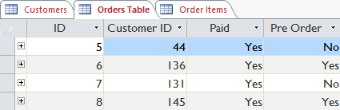
De fapt, pentru a vedea întreaga comandă ar trebui să te uiți și la tabelul Elemente de comandă, unde sunt înregistrate elementele de meniu care compun fiecare comandă.
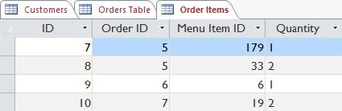
Înregistrările din aceste tabele includ numere de identificare ale înregistrărilor din alte tabele. Nu puteți învăța prea multe doar aruncând o privire la aceste înregistrări, deoarece numerele de identificare nu vă spun prea multe despre datele la care se referă. În plus, deoarece trebuie să te uiți la două tabele doar pentru a vedea o singură comandă, s-ar putea să ai dificultăți chiar și să găsești datele potrivite. Este ușor de văzut cum vizualizarea sau introducerea mai multor înregistrări în acest fel ar putea deveni o sarcină dificilă și plictisitoare.
Un formular care conține aceleași date poate arăta astfel:
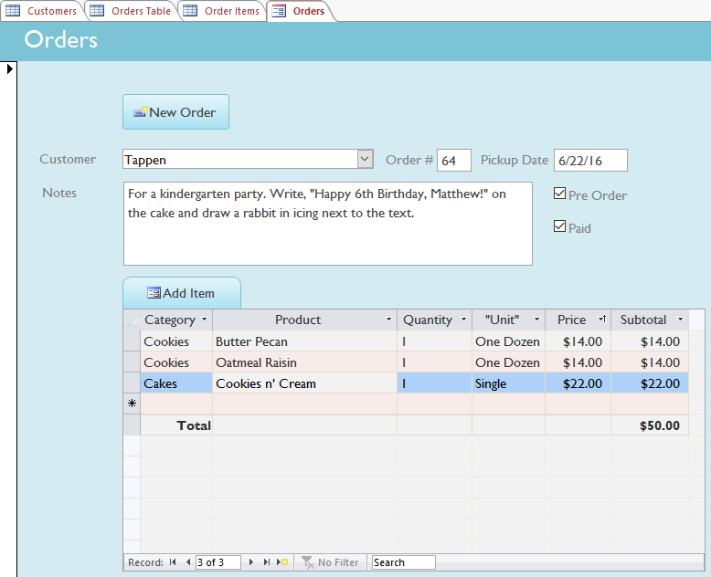
După cum puteți vedea, această înregistrare este mult mai ușor de înțeles atunci când este vizualizată într-un formular. Modificarea înregistrării ar fi, de asemenea, mai ușoară, deoarece nu ar trebui să cunoașteți niciun numere de identificare pentru a introduce date noi. Când utilizați un formular, nu trebuie să vă faceți griji cu privire la introducerea datelor în tabelele potrivite sau în formatul potrivit, deoarece formularul poate gestiona aceste lucruri în sine. Nu este nevoie să mergeți înainte și înapoi între tabele, deoarece formularele reunesc toate informațiile de care aveți nevoie într-un singur loc.
Formularele nu numai că ușurează procesul de introducere a datelor pentru utilizator, dar mențin și baza de date să funcționeze fără probleme. Cu formulare, designerii de baze de date pot controla exact modul în care utilizatorii sunt capabili să interacționeze cu baza de date. Ei pot chiar stabili restricții asupra componentelor individuale ale formularului pentru a se asigura că toate datele necesare sunt introduse și că toate sunt introduse într-un format valid. Acest lucru este util deoarece păstrarea datelor consistente și organizate este esențială pentru o bază de date precisă și puternică.
Lucrul cu formulare Pentru a deschide un formular existent: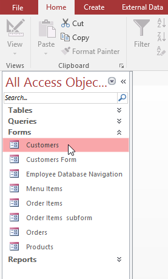
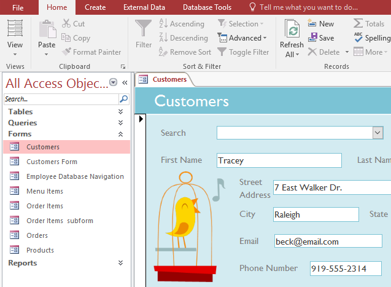
În funcție de baza de date pe care o utilizați, formularele cu care lucrați pot include instrumente și caracteristici speciale care vă permit să efectuați sarcini comune cu un singur clic pe un buton. Veți vedea exemple ale acestor instrumente în interactive mai târziu în această lecție. Cu toate acestea, indiferent de tipul de formular cu care lucrați, puteți urma aceleași proceduri pentru a îndeplini anumite sarcini de bază.
Pentru a adăuga o înregistrare nouă:Există două moduri de a adăuga o înregistrare nouă într-un formular:
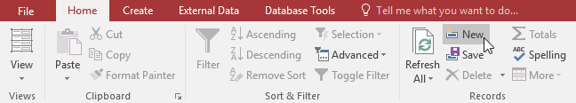
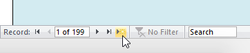
Există două moduri de a găsi și vizualiza o înregistrare existentă folosind un formular și ambele folosesc bara de navigare din partea de jos a ecranului
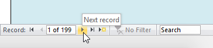
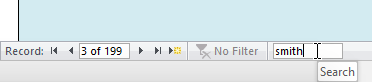
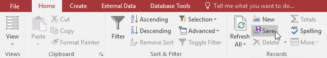
Procedura exactă pe care o utilizați pentru a completa un formular va varia în funcție de conținutul și designul formularului pe care îl utilizați. Formularele din baza de date pot fi similare cu exemplele din cele două interactive de mai jos. Între ele, acestea includ majoritatea caracteristicilor pe care le veți întâlni frecvent în formulare.
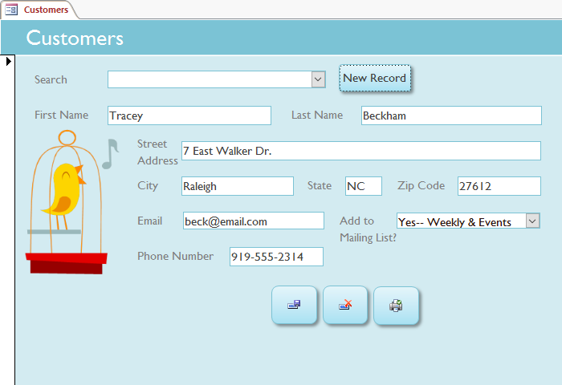
Unele formulare pot include opțiuni suplimentare, cum ar fi butoane de calendar, liste derulante, casete de selectare da/nu, subformulare și tabele încorporate.
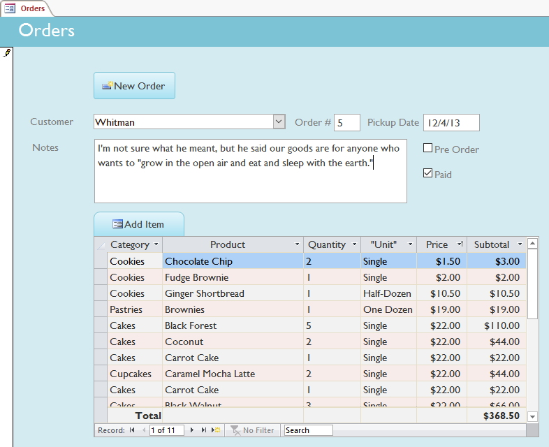